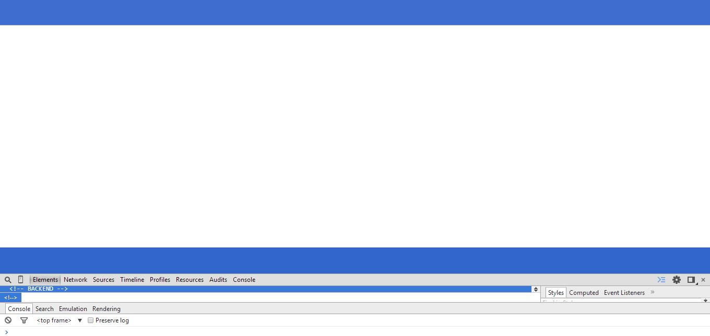
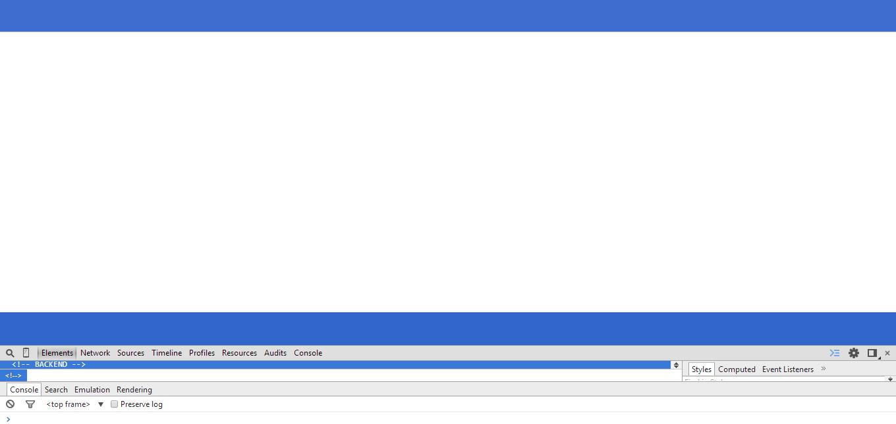

WORK

Published Short Story
Although not noticeably coding-related, I felt like including this story here because I've often been reminded of the process of creating it when trying to realize certain ideas into code. There have been times when I've written stuff like, "Yeah, looks good. We've got something here." And then, after playing it back to myself, I'm left thinking, "Yeah.. that's not what I meant. But whatever; it works." The parallels are certainly worthy to note.
Anyway, I submitted this story back in Grade 12 for the Polar Expressions Publishing 2013/2014 National Student Poetry and Short-Story Contest, and they were kind enough to publish it! So, shout out to them.
 

This Website
For a lot of people, making a website is next-to-near the last thing on their list of things to do, which is understandable, since a website doesn't serve much of a purpose if you've got nothing to put on it. However, as someone whose portfolio wasn't in too-good-a shape during the summer of '14, I figured, "Hey, what if I flip the script a little and make a website first, with almost nothing to put on it? That way, each time I'll look at it, I'll be like, "Sh!t – I got some work to do," thus being that much more motivated to create something for it. That was essentially my philosophy... Between you and me though, theory trumped practice. But, for someone who hadn't been exposed to HTML and CSS prior to the summer, I explored, and became more appreciative of, some of the web's finer details – and, had fun doing so!
Now, onto how I made it. One of my earliest visions for the site was to have an animation that wrote something in cursive. Unfortunately, that was a pretty bold vision for a noob. Thus, I regressed a little: momentarily returning to my roots: MS Paint. After about a thousand takes, I finally got tired and decided to stick with what's there now. It was frustrating to say the least, and it didn't help that LICEcap (no disrespect) occasionally skipped on me, resulting in OCD-triggering white spots. Uhhh.
Apart from that, I really just exploited the responsive and aesthetically pleasing qualities of Bootstrap to my benefit. Along the way however, I systematically severed a few of my ties to Bootstrap just to gain a little more control over how the site responded to the user's unpredictable nature - I spent some time on a few unnecessary nuances, really.
Snow – courtesy of Loktar.
Note** (And I don't know how this happened.) This site became inadvertently optimized for Torch. I apologize if your user experience has been negatively impacted due to the browser-specific shortcomings of this site. I am currently trying to fix them!

The Drinking Game
To maximize my productivity in 1A, I spent my very limited downtime creating an app that simulated the filling of an MS-Word glass with suspicious liquids of your choosing. After stumbling across a Stack Overflow page that implemented what I consider CSS magic, I just had to do it. I also have to thank Brian Grinstead for his spectrum colorpicker, which is the reason the user can even get creative with it.
Play it here.